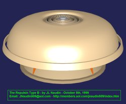
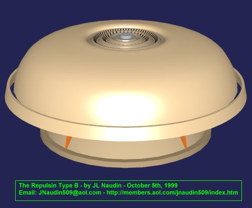
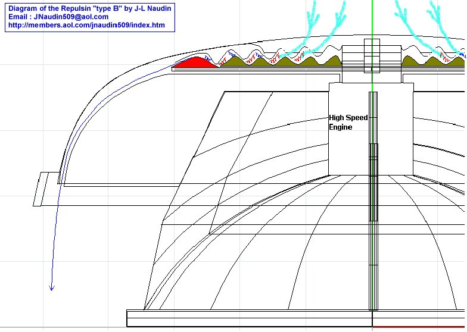
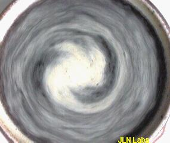
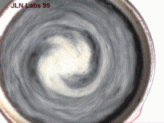

The Coanda Effect
 Some additional comments and
informations about the Repulsin from J. Bailey
Some additional comments and
informations about the Repulsin from J. Bailey
The Schauberger's Flying Saucer

"The Repulsin" Type B
By Jean-Louis Naudin
created on October 5th, 1999 - JLN
Labs - Last update February 4th, 2001
In the Repulsin "type B" the vortex turbine has been improved for increasing the "Implosion Effect" and thus the lifting force, so you will find below a possible explanation about the working principle of "the Repulsin" type B flying saucer from Viktor Schauberger.
The enhanced vortex turbine increases
significantly the "implosion" effect in the vortex
chamber. This contributes to generate a stronger thrust than the
centrifugal turbine used in the Repulsin type A. By means of a
suction screw-impeller, which revolved from the outside towards
the inside along a cycloid spiral space-curve, the same force is
generated which creates twisters, cyclones, typhoons through the
effect of suction.
In 1941 some models had been built, one of them had a diameter of
2.4 meters with a small and very fast electric motor. It climbed
straight up into the air so suddenly that unfortunately it hit
the workshop ceiling and crashed to the ground in pieces...

The implosion motor uses the suction forces of implosion, there is no heat barrier and no sound barrier, because with friction almost entirely lacking, no heat is generated. The air flows through the rotating air inlets placed in the middle and follows the gap between the double membranes (with the wave pattern), this creates a spiral contraction of the flowing medium and creates a vacuum which increases the suction pull.
The enhanced vortex turbine uses two flat membranes with concentric rills on it. A wave pattern has been set on the upper and on the lower membrane. The upper wave is slightly out of phase with the lower wave. The air flow passes through small cavities where the volume sometimes is bigger and sometimes smaller due to the difference in phase between the upper and the lower membrane. When the air passes differents cavities it starts to pulsate. The pulsations are directly depending of the angular speed of the disc, this push-pull action creates an harmonic pulsation of energy...

The upper membrane is fixed and the lower rotates at high speed. On the edge rim there are special shaped blades ( boomerang shaped blades ). There are 120 blades ( 3 degrees spaced ).
 
A vortex spiral in a fluid medium
When the air exits from the turbine at high speed, it follows the curved shape of the hull and increases also its speed while the gap decreases along its path.
See also :
If your are interested to explore the vortex world see also : The Vortex Lab
Suggested books :
"Living Energies " by CALLUM COATS Viktor Schauberger's Brilliant Work with Natural Energies Explained ( ISBN: 0-946551-97-9 )
" Implosion " The secret of Viktor Schauberger compiled by Tom Brown ( BSRF Collection, Borderland Sciences )
 Email : JNaudin509@aol.com
Email : JNaudin509@aol.com
Return to the Vortex technologies page